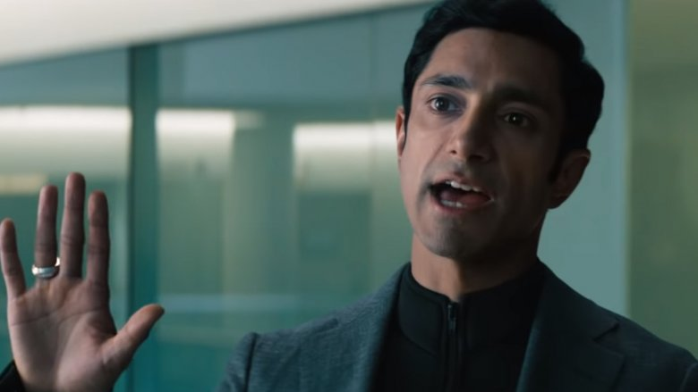
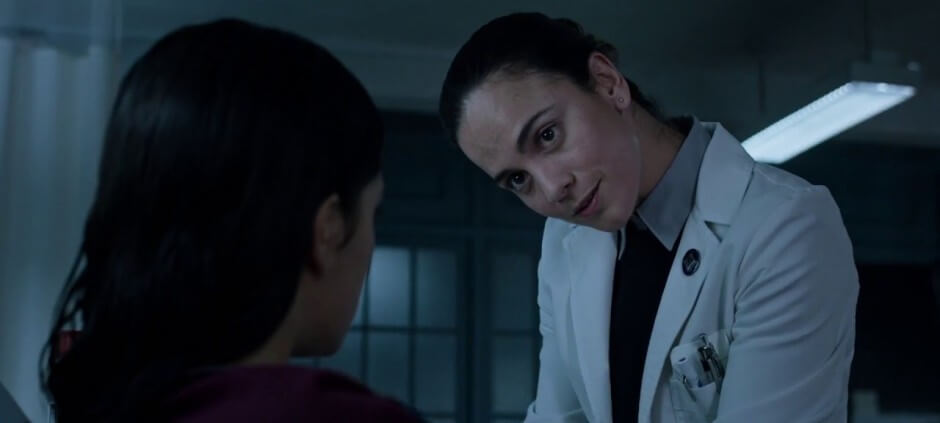

エディ・ブロック / ヴェノム
正義感あふれる落ちぶれたジャーナリスト // 宿主
ライフ財団の闇を暴こうとして職と恋人を失った記者。財団のラボに潜入した際、宇宙から連れ帰られた液状生命体「シンビオート」に寄生される。当初は脳内で響く凶暴な声（ヴェノム）に恐怖するが、次第に奇妙な信頼関係を築き、人間を喰らう残虐性と悪を挫くヒーロー性を併せ持つ「ヴェノム」として覚醒する。
「『俺たちはヴェノムだ。』」
アン・ウェイング
優秀な弁護士 // エディの元婚約者
ライフ財団の顧問を務める法律事務所の弁護士。エディが自分のPCを盗み見て財団を追及したため巻き添えで解雇され、彼と破局する。しかしエディがシンビオートに命を握られていると知ると、危険を顧みず救出に奔走。一時的にシンビオートを自身に宿し「シー・ヴェノム」としてエディを危機から救い出すタフさを持つ。
「頭の中の怪物を何とかしなきゃ。」

カールトン・ドレイク / ライオット
ライフ財団CEO // 最凶のシンビオート・ライオット
「地球は滅びる」という独自の終末思想を持ち、人類が宇宙で生き残るためにシンビオートとの融合実験を非道な手段で繰り返す天才科学者。宇宙船から脱走したシンビオートのリーダー格「ライオット」の宿主となり、両腕を巨大な銀刃に変形させて無双する。ヴェノムを遥かに凌ぐ圧倒的な戦闘力でエディを追い詰める。
「人類は脆弱だ。これは進化なのだよ、ブロック。」

ドーラ・スカース博士
ライフ財団の良心的な筆頭研究員
ドレイクの側近としてシンビオートの融合実験を行っていたが、ホームレスや弱者を使い殺害し続けるドレイクの冷酷な臨床試験に耐えかね、財団を裏切る決意をする。ジャーナリストのエディに接触し、機密であるラボ内部へと彼を招き入れたことで、ヴェノム誕生の最大のキッカケを作った人物。
「ドレイクは狂っています。死者が出続けているのに実験を止めない。……ブロックさん、中を見て、世界に告発してください。」